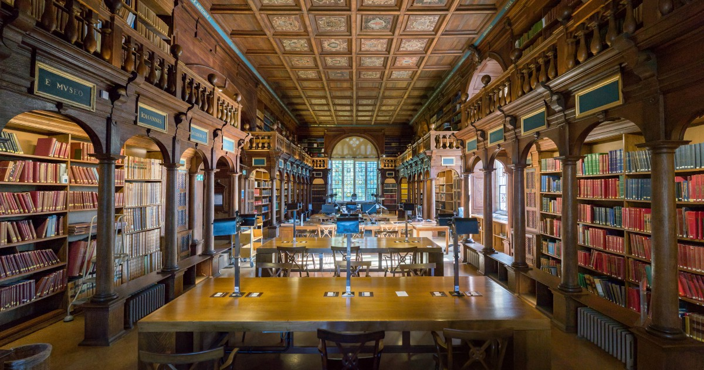

University
|
|
Oxford University |
| OXFORD LIBRARY Oxford meets the needs of its students, academics and the international research community with a wide range of library services provided by more than 100 libraries, making it the largest library system in the UK. The Bodleian Libraries at the University of Oxford is the largest university library system in the United Kingdom. It includes the principal University library – the Bodleian Library – which has been a legal deposit library for 400 years; as well as 30 libraries across Oxford including major research libraries and faculty, department and institute libraries. |
|  |